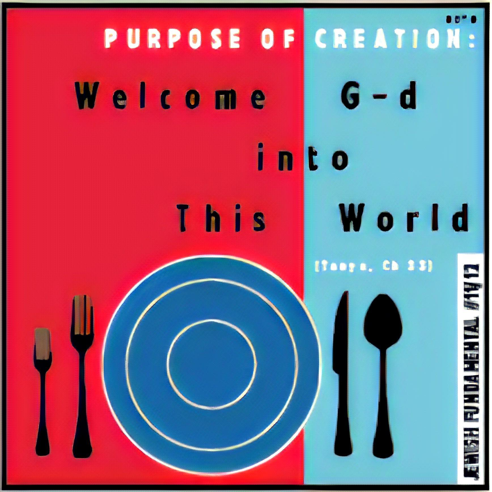

Souffle!

Description
A soufflé is a delicate French dish made from
egg yolks and whipped egg whites, baked to achieve
a light, airy texture. It can be savory or sweet,
with flavors like cheese, chocolate, or fruit.
Served hot, it impresses with its dramatic rise and
soft, cloud-like interior.
Ingredients
- Eggs
- Butter
- Pan
Steps
- Get a pan!
- Get the eggs and butter
- Cook!
BACK